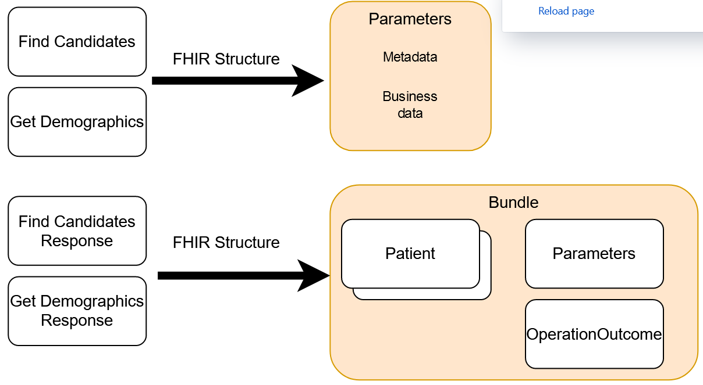

BC Client Registry FHIR Implemenation Guide
0.1.0 - ci-build
BC Client Registry FHIR Implemenation Guide
0.1.0 - ci-build
BC Client Registry FHIR Implemenation Guide - Local Development build (v0.1.0). See the Directory of published versions
Note
This specification is currently published as a Draft Standard on the ministry github and is not intended for implementation. Feedback is welcome but readers should understand that there is more work to be done in testing the profiles and operations defined in this guide. For more information, please see the Future Plans page in this guide.
The Find Candidates interaction uses the name and other criteria (e.g. date of birth) to find the client’s record and PHN via a “probabilistic search” in the Client Registry. In a probabilistic search, the outcome of the search cannot be predicted.
The Find Candidates transaction could return many matches depending on the information provided.
Specific search criteria include:
The Find Candidates is a synchronous request-response transaction.
This interaction is used to retrieve the most current demographic information (i.e., name, address, gender, date of birth, and date of death if applicable) from the Client Registry and confirm MSP eligibility for a specific person when the PHN is known.
If the patient has a PHN, a ‘get’ is performed against the Client Registry and the demographics returned and displayed to the user.
Using Get Demographics is referred to as performing a “deterministic search”. In a deterministic search, the outcome of the search can be predicted. Get Demographics will return only one client record because there is only one client record that corresponds to the provided PHN.
The Get Demographics is a synchronous request-response transaction
Below is a figure that shows the FHIR structure for the two searches. The request is a Parameter resource and the response is a searchset Bundle with 0 or more Patients and one OperationOutcome. The OperationOutcome is where you’ll find warnings and errors regarding the search.

Client Registry FHIR searches do not support parameters found in the FHIR international specification: _content, _id, _lastUpdated, _profile, _query, _security, _source, _tag, _text and _filter. As well modifiers, prefixes, search hierarchies, chained parameters, reverse chaining, sorting, paging, includes, revincludes,
Shamil reviewed PLR IG and wanted more like the above in the IG - lists of FHIR features our FHIR sever will not support in words and in the capability statement. I’m not sure we want to make lists like the above all over the place in here. It may be easier to say “This is what we support, nothing else.”
The IN and OUT search parameters and resources for Get Demographics can be found here GetDemographics search.
The IN and OUT search parameters for Find Candidates can be found here FindCandidates search.
In a searchset Bundle the entry.search.score attribute in FHIR is a decimal number between and including 0 and 1. The Client Registry FHIR profile is non-conformant as the score returned by the EMPI doesn’t map well into the 0 to 1 range. Therefore the EMPI match score will be returned as is allowing users to continue to interpret this score as they currently do.